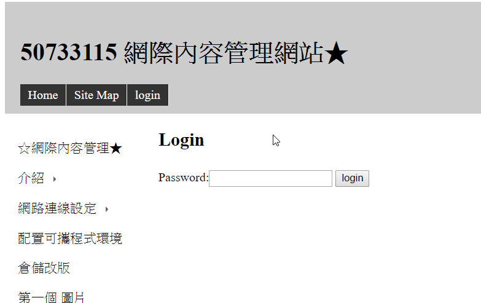

建立 Git 倉儲, 並 clone 倉儲至近端工作後, 對遠端倉儲改版
可攜程式系統中已經內建 git, 可以在啟動 start.bat 後, 透過 path 的設定, 直接執行 git 指令.
建立 Git 倉儲, 共分為兩類, 一類是直接在 Github 網際介面下建立倉儲時, 要求建立 README.md 檔案, 之後可以直接在近端, 以 git clone 加上倉儲連線 URL, 將倉儲克隆一份到近端, 並以最新版本作為工作目錄, 使用者改版後, 可以直接透過 git add, commit 與 push 對遠端倉儲改版.
另一類則是故意在 Github 網際介面下建立倉儲時, 不要建立任何檔案, 而是在近端自行利用 git 指令建立倉儲架構, 新增內容後, 以 git remote add 設法在近端倉儲中納入 origin URL 後, 將近端倉儲版本新增提交推送到遠端.
首先先輸入cd 2019wcmj 隨後再打python wsgi.py 複製https://127.0.0.1:9443/
進到網頁登錄密碼:admin後便可以開始進行改版

改版完成後再透過git add . git commit -m"" git push
指令解釋
git add
可以用來新增一個檔案, 數個檔案, 或在之前提交後所新增的所有內容.
git add 在 GIT 架構下, 是對所新增或修改的內容拍快照:
git commit
執行之前, 必須使用 git config 建立臨時或永久的身分註記, 因為 GIT 在展開所有改版內容時, 必須明確登錄這些變更的作者與時間.
當使用者採用 git commit -m "改版說明訊息", 此次提交到 .git 目錄下的更動內容, 均會綁定使用者身分與改版所輸入的說明訊息.
git push
在隨後沒有輸入遠端 URL 代號時, 表示要推送到 origin, 若透過 git remote add 設定其他代號與 URL 對應時, git push 加上代號, 就可以將此次的提交內容, 推送到指定的 URL 所在遠端倉儲.
利用 CMSimfly (https://github.com/chiamingyen/cmsimfly) 內容, 建立自己的 Github Pages 網站